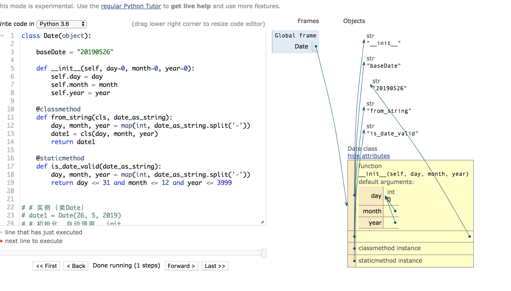

摘要内容......
目标
- ✅回顾面向过程、面向对象编程
- ✅回顾类与对象中的常用概念
- ✅对类的基本操作
第一部分 面向过程与面向对象
第一部分只要是回顾下概念、区别。
可以跳过
1 面向过程 OPP
相信大家学习编程的时候，刚接触的就是C语言吧，还记得那个main函数么
“面向过程”(Procedure Oriented)是一种以过程为中心的编程思想。就是分析出解决问题所需要的步骤，然后用函数把这些步骤一步一步实现，使用的时候一个一个依次调用就可以了。

2 面向对象 OOP
面向对象程序设计（英语：Object-oriented programming，缩写：OOP）是种具有对象概念的程序编程典范，同时也是一种程序开发的抽象方针。它可能包含数据、属性、代码与方法。
对象则指的是类的实例。
它将对象作为程序的基本单元，将程序和数据封装其中，以提高软件的重用性、灵活性和扩展性，对象里的程序可以访问及经常修改对象相关连的数据。在面向对象程序编程里，计算机程序会被设计成彼此相关的对象.摘录自维基百科

三大特性是：
五大基本原则
- 单一职责原则SRP(Single Responsibility Principle)
- 开放封闭原则OCP(Open－Close Principle)
- 替换原则(the Liskov Substitution Principle LSP)
- 依赖原则(the Dependency Inversion Principle DIP)
- 接口分离原则(the Interface Segregation Principle ISP)
3. 二者对比
简单的把二者总结，我觉得就是耍流氓，所以这部分还是去搜索吧 -—___—
第二部分 Python 面向对象
1 类 常见概念
class Date(object):
baseDate = "20190526"
def __init__(self, day=0, month=0, year=0):
self.day = day
self.month = month
self.year = year
@classmethod
def from_string(cls, date_as_string):
day, month, year = map(int, date_as_string.split('-'))
date1 = cls(day, month, year)
return date1
@staticmethod
def is_date_valid(date_as_string):
day, month, year = map(int, date_as_string.split('-'))
return day <= 31 and month <= 12 and year <= 3999
date1 = Date(26, 5, 2019)
date1.nextDay = "20190527";
print("初始化: year %s mounth %s day %s, nextDay" % (date1.year, date1.month, date1.day, date1.nextDay))
date2 = Date.from_string('26-05-2019')
print(date2)
print("类方法: year %s mounth %s day %s" % (date2.year, date2.month, date2.day))
is_date = Date.is_date_valid('11-09-2012')
print("实例方法: %s" % (is_date))
print("类属性： %s, id: %s" % (Date.baseDate, id(Date.baseDate)))
Date.baseDate = "20200101"
print("fake🆕类属性： %s, id: %s" % (Date.baseDate, id(Date.baseDate)))
|
返回值
初始化: year 2019 mounth 5 day 26, nextDay 20190527
<__main__.Date object at 0x101bab630>
类方法: year 2019 mounth 5 day 26
实例方法: True
类属性： 20190526, id: 4323995760
fake🆕类属性： 20200101, id: 4323996336
|

概念定义：
类(Class): 用来描述具有相同属性和方法的对象的集合。它定义了该集合中每个对象所共有的属性和方法。其中的对象被称作类的实例。
实例：也称对象。通过类定义的初始化方法，赋予具体的值，成为一个"有血有肉的实体"。
实例化：创建类的实例的过程或操作。
实例变量：定义在实例中的变量，只作用于当前实例。
类变量：类变量是所有实例公有的变量。类变量定义在类中，但在方法体之外。
数据成员：类变量、实例变量、方法、类方法、静态方法和属性等的统称。
方法：类中定义的函数。
静态方法：不需要实例化就可以由类执行的方法
类方法：类方法是将类本身作为对象进行操作的方法。
|
2 类方法、实例方法
当搜索Python类时，有很多人再问一个问题
实例方法、类方法的使用场景是什么❓
区别是什么❓
关于这个问题，搜了不少资源，把我认为比较好的分享出来，希望对大家有用
应用场景举例
摘录自知乎
应用场景
1. 构造前交互
2. 特殊构造函数
3. __new__等
4. 为函数提供子类hook点
|
相比staticmethod
1. 方法可以判断出自己是通过基类被调用，还是通过某个子类被调用
2. 通过子类调用时，方法可以返回子类的实例而非基类的实例
3. 通过子类调用时，方法可以调用子类的其他classmethod
|
建议：
1. 除非能说出合理的理由，否则能用classmethod的时候就使用classmethod
2. 将类的定义改造成另外某种语义的时候使用metaclass，实现类的业务上的多态使用classmethod
3. 对类的用户可见的功能使用classmethod，对类的用户不可见的功能可以考虑使用metaclass
4. 没疯用classmethod，疯掉之后可以metaclass满天飞
|
总结
Python中的classmethod（和staticmethod）并不止拥有美学上（或者命名空间上）的意义，而是可以实际参与多态的、足够纯粹的OOP功能.
原理在于Python中类可以作为first class的对象使用，很大程度上替代其他OOP语言中的工厂模式。
classmethod既可以作为factory method提供额外的构造实例的手段，也可以作为工厂类的接口，用来读取或者修改工厂类本身。
classmethod还可以通过额外的类引用，提供继承时的多态特性，实现子类挂载点等。
以下为实例，佐证上侧结论
Python类方法的优势，先看代码
class DBCursor(object):
"""
Create cursor to database
"""
def __init__(self, **arguments):
pass
def execute(self, sql):
raise NotImplementedError
@classmethod
def configure(cls, config):
cls.config = config
|
一般数据库插件都支持很多的配置，我们希望这个配置可以以集中式的方式保存在应用配置中，这样我们为DBCursor类增加了一个configure接口，它会在任何DB Cursor被实例化之前，首先在类上被调用，这样在初始化__init__的时候，就可以使用这个配置了。
在Java等语言中，这类功能通常通过工厂类（Factory）实现，先初始化一个工厂类的实例，然后由这个工厂类的实例构造实际需要的实例。在Python中，普通类完全可以替代Factory，而对于支持配置的Factory，就对应到相应的classmethod。
参考链接
类思维导图
堆栈
内存管理
内存
深入内存
python内存管理–分层分配】
内存
 摘要内容......
摘要内容......